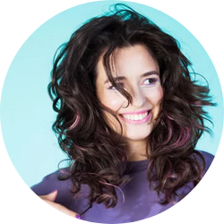

Анастасия Андросова
Основательница салона. Главный мастер
"Привет! Меня зовут Настя, и я обожаю кудряшки!
А еще я знаю как нелегко с ними, бывает, справиться, если не правильно за ними ухаживать, ведь я с рождения наделена завитками и тоже когда-то не знала, что с ними делать, чтобы они были красивыми и ухоженными. Я все время выпрямляла и укладывала их разными способами, а носила естественными только на море или летом после купания в речке, потому что именно в эти моменты кудряшки выглядели так как я хотела.
Потом я случайно узнала про метод "кудрявых девчонок", который придумала известный, в кудрявых кругах, парикмахер Лоррен Месси. Я прочитала ее книгу, искала разную информацию в интернете и начала следовать ее советам. Уже с первого раза результат меня порадовал: волосы завились с новой силой и это дало мне стимул отказаться от любой другой укладки и начать любить их в натуральном состоянии.
В один прекрасный момент у меня появилась возможность изменить свою жизнь (а заодно и всех остальных людей с вьющимися волосами рядом со мной) и я начала готовиться к поездке в США, чтобы пройти курсы в академии Devacurl (сеть салонов в США, основанная Лоррен Месси и занимающаяся преимущественно натуральными кудрявыми волосами). Подготовка не прошла даром и позволила мне закончить 3 ступени курсов в академии Devacurl в Нью-Йорке в 2016 году и получить сертификат кудрявого эксперта, первого в России!
В 2017 году я посетила международный съезд кудрявых экспертов в городе Сент-Джонс (Ньюфаундленд, Канада).
С 2018 года я начала развивать собственный кудрявый салон и обучать других мастеров. Кроме этого, в 2018 году мне удалось встретиться с самой Лоррейн Месси и даже побывать на ее мастер классе в Вашингтоне.
В 2019 году я закончила курс RezoCut в Солт-Лейк-Сити.
И это только начало!
Теперь я и мои коллеги с радостью можем предложить свои услуги всем обладателям кудрявых волос, чтобы помочь им полюбить свои волосы, а тем кто и так безума от своих завитков - будем помогать поддерживать их в хорошем состоянии.
До встречи! "